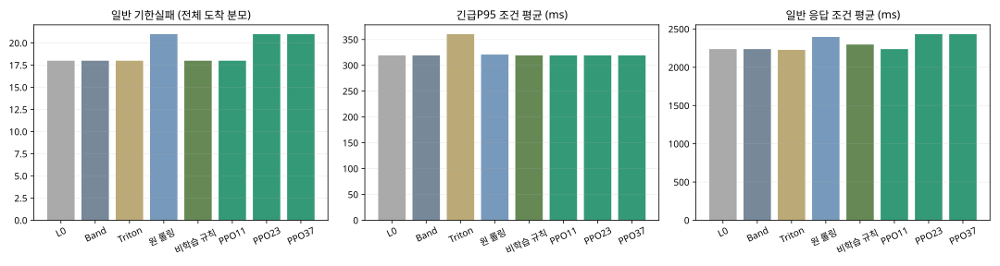
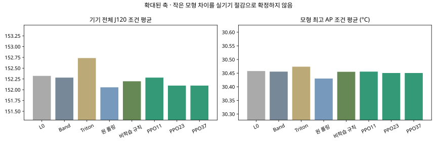
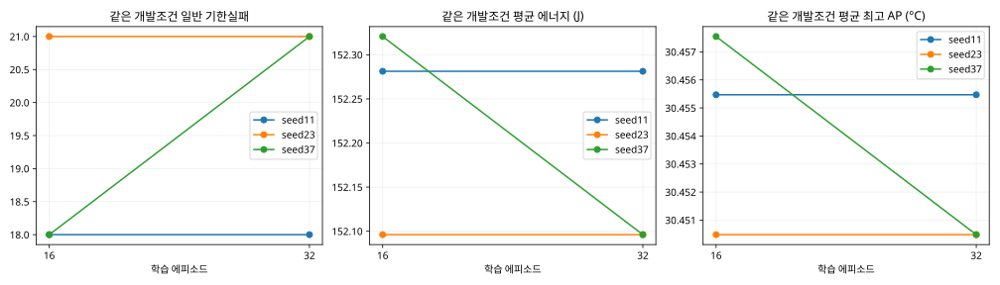
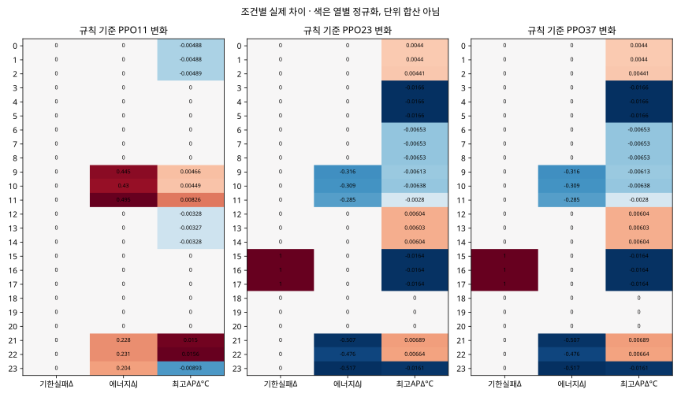
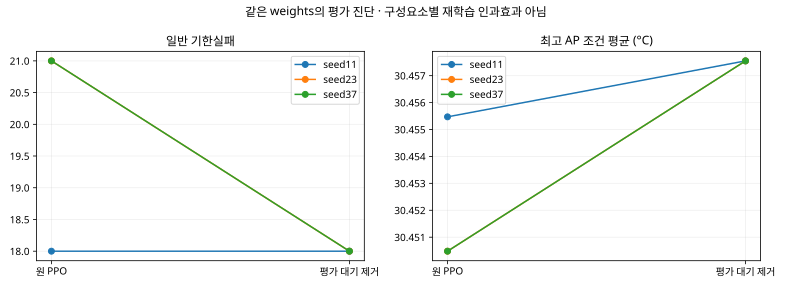

롤링 리스트 + 같은 후보 선택 PPO
전조건 RL 채택 기준 미달 · 기준 정책 유지
학습seed11·23·37 각32에피소드 · 16/32 같은 개발24조건 비교 · 실제Adam/부분배치 재개4학습 exact
기본·복귀·학습참조·예측후속은 리스트L0입니다. Band는 비교군입니다. 상태에는 공개된 큐·도착 이력·누적 대기와 실측 기반 모형추정만 있습니다. 마스킹과 예측허용은 실제 미래기한 보장이 아닙니다. 원모형의 냉각→처리속도 회복은 여전히 미지원입니다.
한국어 판독 · 실행 전 계약 · 전량 CSV · 조건별 대응차이 · 실제 학습·gradient·승수 · 마스크·선택·대기·PC부담
모든 seed와 학습 단계
응답/J/AP는조건별평균,실패는예정긴급/일반전체분모입니다. 3문맥은민감도이며독립반복이아닙니다. 개발자료결과이며새최종확인0입니다.
서비스와 완료

에너지와 모형온도

학습량과 개발성능

조건별 RL추가효과

대기행동 제거

기기 실행/새모형적합0 · 표면온도/안전한도 초과/폰 판단에너지 계산불가. PC시간을폰 제어시간이나전력으로전용하지않습니다. 작은학습의실패를RL일반실패/수렴완료로부르지않습니다. 기본·strict·experiment_ready=false 유지.